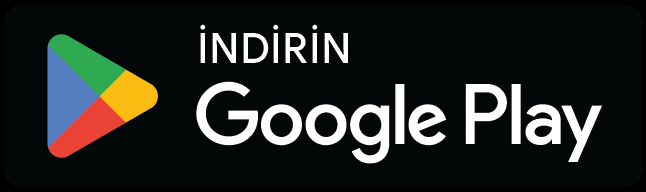

LunaPara
Finans
Gelir ve gider takibi, duygusal harcama örüntülerini keşfetme ve yapay zeka destekli analiz.


Teste katıl
Kapalı test
aşamasında
aşamasında

Tide Mobile
Tide Mobile, sektör içgörülerini analiz ederek fırsatları belirleyen ve bunları finans, seyahat ve zihinsel iyi oluş alanlarında mobil ürünlere dönüştüren bağımsız bir ürün stüdyosudur.
Adana'dan
Dünyaya.
Rakamlarla Tide Mobile
Nasıl çalışıyoruz?
Kullanıcı davranışlarını ve sektör dinamiklerini analiz ediyoruz.
Gerçek ihtiyaçları belirliyor, çözümler geliştiriyoruz.
İnsanlara değer katan mobil ürünlere dönüştürüyoruz.
Hakkımızda
Tide Mobile, insan davranışını anlamak, gerçek ihtiyaçları çözmek ve sürdürülebilir dijital deneyimler yaratmak için multidisipliner bir yaklaşımı benimser. Adana merkezli bağımsız bir stüdyoyuz; psikoloji tarafındaki içeriklerimiz uzman psikolog onayından geçer.
Daha Fazlaİnsan odaklı, empatik tasarım.
Estetik ve işlevi bir arada sunar.
Gerçek verilerle, doğru kararlar.
Sadece bugün için değil, yarın için.
Vizyon ve misyon
Tide Mobile, teknolojinin kullanıcıların hayatını kolaylaştırdığı; sağlıklı, güvenli ve daha bilinçli bir gelecek için çalışır.
Daha Fazla“Teknoloji,
insan için vardır.”
Uygulamalarımız
Finans
Gelir ve gider takibi, duygusal harcama örüntülerini keşfetme ve yapay zeka destekli analiz.

Seyahat
Vize gereksinimleri, siyasi risk bilgileri, Schengen 90/180 hesaplayıcı ve seyahat sigortası erişimi.

iOS sürümü
Zihinsel İyi Oluş
Psikolog onaylı yolculuklar, duygu günlüğü, meditasyonlar ve seni yargılamadan dinleyen bir sohbet arkadaşı.

Bilişsel Davranışçı Terapi
BDT ilkelerine dayanan düşünce kayıtları, duygu takibi ve Sokratik sorgulama.
Basında Tide Mobile
3. Uluslararası İhracat ve Yatırım Zirvesi'nde (ITS 2026) Kurucu Ortağımız C. Tanıl Tabakoğlu, Haberler.com'a Tide Mobile'ın çıkış hikâyesini ve Modi'yi anlattı.
“Psikolojik destek arayışından önceki ilk adımı kolaylaştırmayı hedefliyoruz.”
Ekibimiz
Kurucu Ortak · Ürün ve Büyüme
Kurucu Ortak · Psikoloji ve İçerik
Marka ve İletişim Lideri
Görsel ve Web Tasarımcı
Yapay Zeka Mühendisi
2026 yol haritası
Marka altyapısını güçlendirme
Wellness ve psikoloji odaklı ürün geliştirmeleri
İçerik ve topluluk katmanını büyütme
Yeni deneyimleri yayına hazırlama
Uzman desteği
Uzman Psikologİlknur Yılmazgil
Detayları Gör
Tümü daha iyi bir sen için
Tide Mobile, psikoloji, veri ve tasarım gücüyle daha iyi bir dijital deneyim sunar.
Uygulamaları KeşfetTeknik ortaklık
Yapay zeka destekli mobil uygulamalar, premium UI/UX ve interaktif deneyimler için ajanslar ve markalarla iş birliği yapıyoruz.
İletişime GeçSıkça sorulan sorular
Tide Mobile (Tidemobile), Adana merkezli bağımsız bir mobil uygulama stüdyosudur. Ruh sağlığı uygulaması Modi'yi ve seyahat ve vize planlama uygulaması TerraVisa'yı geliştirir. Ürünlerinde psikoloji, veri ve tasarımı bir araya getirir.
Modi (ruh sağlığı, App Store ve Google Play'de yayında), TerraVisa (vize ve seyahat planlama, Google Play'de yayında, iOS sürümü App Store onay sürecinde), LunaPara (finansal farkındalık, kapalı test aşamasında) ve Reframe (BDT temelli düşünce kaydı, geliştirme aşamasında).
Modi, App Store ve Google Play'de ücretsiz olarak yayında. İndirmesi ve temel özellikleri ücretsizdir; isteğe bağlı Modi Premium ek içerik sunar. Ayrıntılar için Modi'nin web sitesine göz atabilirsin.
Ajanslar ve markalar için mobil uygulama geliştirme, UI/UX ve interaktif deneyim üretiminde teknik ortaklık sunuyoruz. Ayrıntılar Teknik Ortaklık sayfasında; tidemobile.contact@gmail.com adresinden ya da yandaki formdan da ulaşabilirsin.
Hayır. Modi terapi yerine geçmez ve tanı koymaz. Günlük iyi oluşu destekleyen bir araçtır. Sohbette risk fark edildiğinde kullanıcıyı 112 Acil Çağrı ve 182 MHRS gibi profesyonel destek kaynaklarına yönlendirir.
TerraVisa, pasaportuna göre ülkelerin vize gereksinimlerini ve siyasi risk seviyelerini interaktif bir dünya haritasında gösteren bir seyahat uygulamasıdır. Schengen 90/180 gün hesaplayıcı, vize maliyet hesaplayıcı, evrak sihirbazı ve VFS/BLS konsolosluk randevu bildirimleri içerir. Uygulama ücretsizdir; isteğe bağlı premium abonelik ek özellikler sunar.
Schengen bölgesinde herhangi bir 180 günlük dönem içinde en fazla 90 gün kalınabilir. TerraVisa'daki Schengen 90/180 gün hesaplayıcısına giriş ve çıkış tarihlerini eklediğinde kalan gün hakkını otomatik olarak hesaplar.
LunaPara şu anda kapalı test aşamasındadır. Erken erişim için test grubuna katılıp Google Play üzerinden test kullanıcısı olabilirsin.
İletişim
Sorularınız, iş birliği talepleriniz veya geri bildirimleriniz için buradayız.
tidemobile.contact@gmail.comAdana, Türkiye